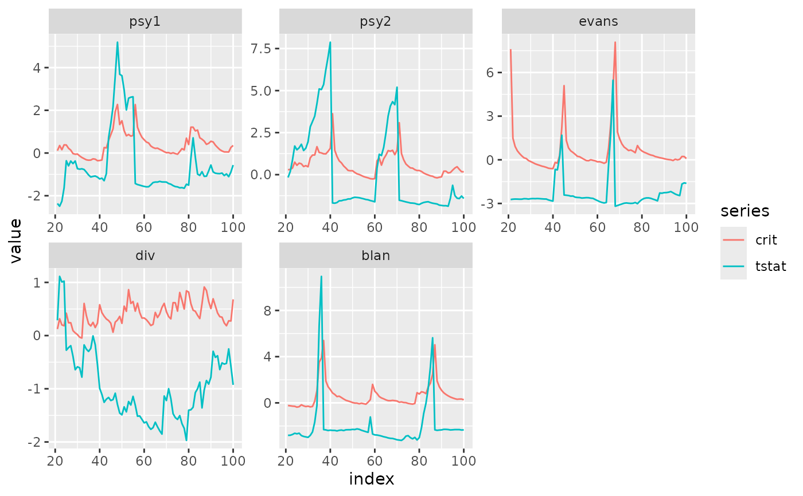

Tidy or augment and then join objects of class radf_obj and radf_cv. The
object of reference is the radf_cv. For example, if panel critical values
are provided the function will return the panel test statistic.
Usage
# S3 method for class 'radf_obj'
tidy_join(x, y = NULL, ...)
# S3 method for class 'radf_obj'
augment_join(x, y = NULL, trunc = TRUE, ...)Examples
# \donttest{
rsim_data <- radf(sim_data, minw = 20)
cv <- radf_wb_cv(sim_data, minw = 20)
# One row per series/statistic, statistic and critical value side by side
tidy_join(rsim_data, cv)
#> # A tibble: 45 × 5
#> id stat tstat sig crit
#> <fct> <fct> <dbl> <fct> <dbl>
#> 1 psy1 adf -2.46 90 -0.635
#> 2 psy1 adf -2.46 95 -0.462
#> 3 psy1 adf -2.46 99 0.0862
#> 4 psy1 sadf 1.95 90 1.49
#> 5 psy1 sadf 1.95 95 1.97
#> 6 psy1 sadf 1.95 99 3.05
#> 7 psy1 gsadf 5.19 90 2.77
#> 8 psy1 gsadf 5.19 95 3.39
#> 9 psy1 gsadf 5.19 99 5.16
#> 10 psy2 adf -2.86 90 -0.598
#> # ℹ 35 more rows
# summary() and diagnostics() are themselves built on top of tidy_join()
summary(rsim_data, cv = cv)
#>
#> ── Summary (minw = 20, lag = 0) ──────────────── Wild Bootstrap (nboot = 500) ──
#>
#> psy1 :
#> # A tibble: 3 × 5
#> stat tstat `90` `95` `99`
#> <fct> <dbl> <dbl> <dbl> <dbl>
#> 1 adf -2.46 -0.635 -0.462 0.0862
#> 2 sadf 1.95 1.49 1.97 3.05
#> 3 gsadf 5.19 2.77 3.39 5.16
#>
#> psy2 :
#> # A tibble: 3 × 5
#> stat tstat `90` `95` `99`
#> <fct> <dbl> <dbl> <dbl> <dbl>
#> 1 adf -2.86 -0.598 -0.498 -0.157
#> 2 sadf 7.88 3.06 3.92 5.33
#> 3 gsadf 7.88 4.04 4.86 6.29
#>
#> evans :
#> # A tibble: 3 × 5
#> stat tstat `90` `95` `99`
#> <fct> <dbl> <dbl> <dbl> <dbl>
#> 1 adf -5.83 -0.496 -0.323 -0.122
#> 2 sadf -2.73 4.75 6.61 12.7
#> 3 gsadf 5.47 7.77 9.63 14.8
#>
#> div :
#> # A tibble: 3 × 5
#> stat tstat `90` `95` `99`
#> <fct> <dbl> <dbl> <dbl> <dbl>
#> 1 adf -1.95 -0.359 0.0473 0.409
#> 2 sadf 1.11 0.926 1.30 1.91
#> 3 gsadf 1.11 1.76 2.11 2.50
#>
#> blan :
#> # A tibble: 3 × 5
#> stat tstat `90` `95` `99`
#> <fct> <dbl> <dbl> <dbl> <dbl>
#> 1 adf -5.15 -0.332 -0.102 0.315
#> 2 sadf 3.93 3.45 4.74 7.70
#> 3 gsadf 11.0 6.41 7.53 11.4
#>
# }
# \donttest{
rsim_data <- radf(sim_data, minw = 20)
cv <- radf_wb_cv(sim_data, minw = 20)
# Full statistic-path/critical-value-path join -- the table autoplot() is built on
aj <- augment_join(rsim_data, cv)
aj
#> # A tibble: 2,400 × 8
#> key index id data stat tstat sig crit
#> <int> <dbl> <fct> <dbl> <fct> <dbl> <fct> <dbl>
#> 1 21 21 psy1 110. badf -2.36 90 -0.198
#> 2 22 22 psy1 98.1 badf -2.49 90 -0.129
#> 3 23 23 psy1 91.0 badf -2.26 90 -0.126
#> 4 24 24 psy1 80.4 badf -1.63 90 -0.132
#> 5 25 25 psy1 69.2 badf -0.815 90 -0.0975
#> 6 26 26 psy1 72.3 badf -0.960 90 -0.164
#> 7 27 27 psy1 67.7 badf -0.693 90 -0.340
#> 8 28 28 psy1 69.1 badf -0.771 90 -0.388
#> 9 29 29 psy1 65.4 badf -0.609 90 -0.364
#> 10 30 30 psy1 72.4 badf -0.939 90 -0.403
#> # ℹ 2,390 more rows
# Reproduce (a simplified version of) autoplot()'s own bsadf-vs-crit line plot
library(ggplot2)
aj %>%
dplyr::filter(sig == 95, stat == "bsadf") %>%
tidyr::pivot_longer(c(tstat, crit), names_to = "series") %>%
ggplot(aes(index, value, col = series)) +
geom_line() +
facet_wrap(~id, scales = "free")

# }